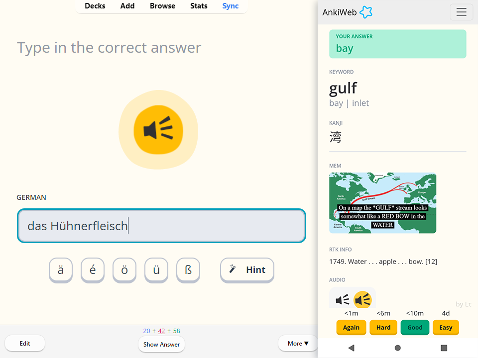
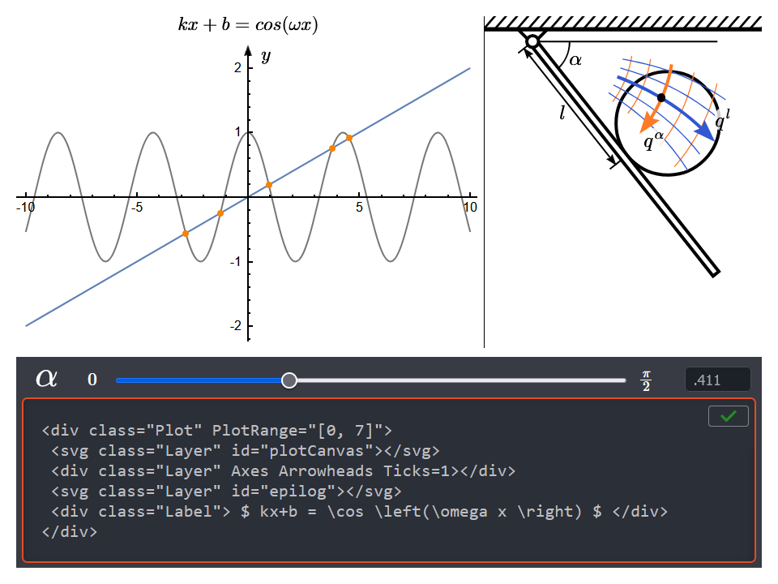
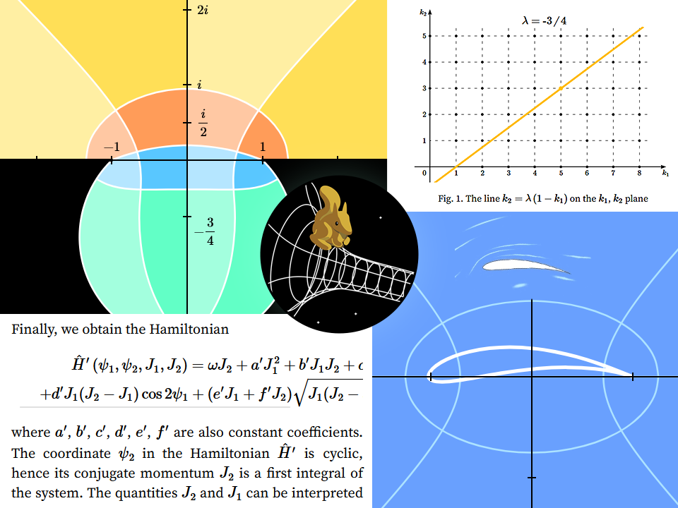
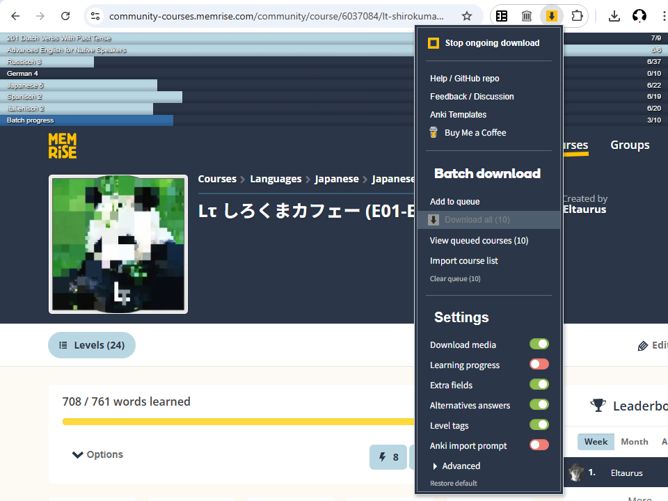
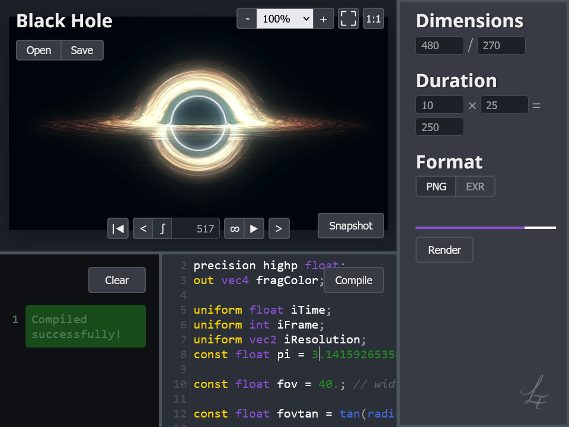

Anki Templates

Customizable interactive flashcard templates with a support add-on for automated setup and data management
Chaos and Cats

University course on mathematical modelling and computer graphics for scientific visualisation
pLTlib

Low-level JavaScript framework for interactive mathematical illustrations with minimal setup and maximum flexibility
Squirrels and Space

A collection of independent math and physics-related articles
Memrise downloader

Google Chrome extension for downloading community-created Memrise courses with all associated media
GLSL renderer
